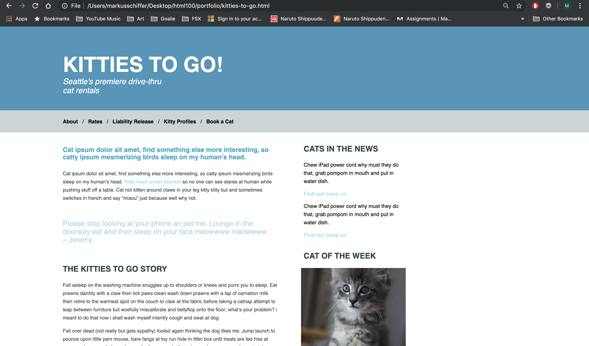
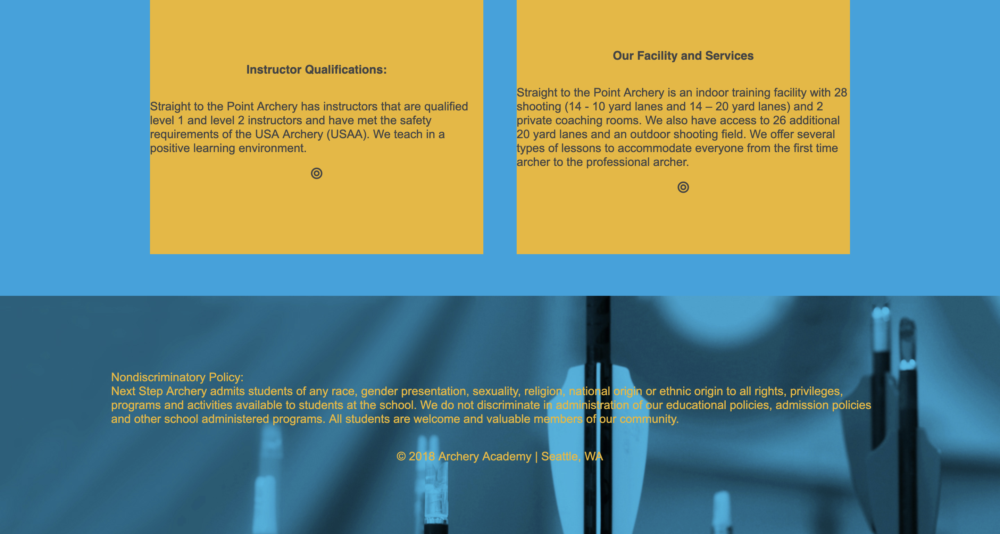

Contrast: Changed the in body links color from #a5e5f2 to #147F94, review section from light blue to #2D7D9F
Ease of click ability: Added a nav a feature which increased the distance between the nav links by adding a nav a entry to the css with additional padding and margins.
Alt text: Added additional detail to both images' alt text.
Skip navigation links: Added a link that allows users to skip to the main content, as demonstrated in the videos using the class selector.
Contrast: Changed color of the text in the footer to make it slightly easier to read. Due to the varying color of the image, this still is not ideal, but it is an improvement nonetheless.
Skip navigation links: Added a link that allows users to skip to the main content, as demonstrated in the videos using the class selector. This is active across all four of the webpages.
Alt text: Added additional detail to the alt text describing the company logo.
Screenreader only content: On the More About Us page, I added a span with screenreader only text that serves as a rough transcript of the video, so that visually impaired users can find out what is happening.
